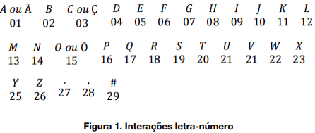

Em matemática discreta, o conceito de matriz de adjacência, que é uma das formas de se representar um grafo. Dado um grafo G com n vértices, podemos representá-lo como uma matriz n x n A(G)=[aij]. A definição precisa das entradas da matriz varia dependendo das propriedades do grafo a ser representado, mas normalmente o valor aij contém informações sobre como os vértices vi e vj estão relacionados (ou seja, informações sobre a adjacência de vi e vj) (CHARTRAND, G., LESNIAK, L.2004).
Para representar um grafo não direcionado, simples e sem pesos nas arestas, é suficiente que a entrada aij da matriz A contenha 1 se vi e vj forem adjacentes e 0 caso contrário. Se as arestas do grafo tiverem pesos, quando houver uma aresta entre vi e vj , aij pode conter o peso da mesma aresta em vez de 1 (CHARTRAND, G., LESNIAK, L.2004).
A.A1=A1.A=In,

T E C N O L O G I A
20 05 03 14 15 12 15 07 09 01